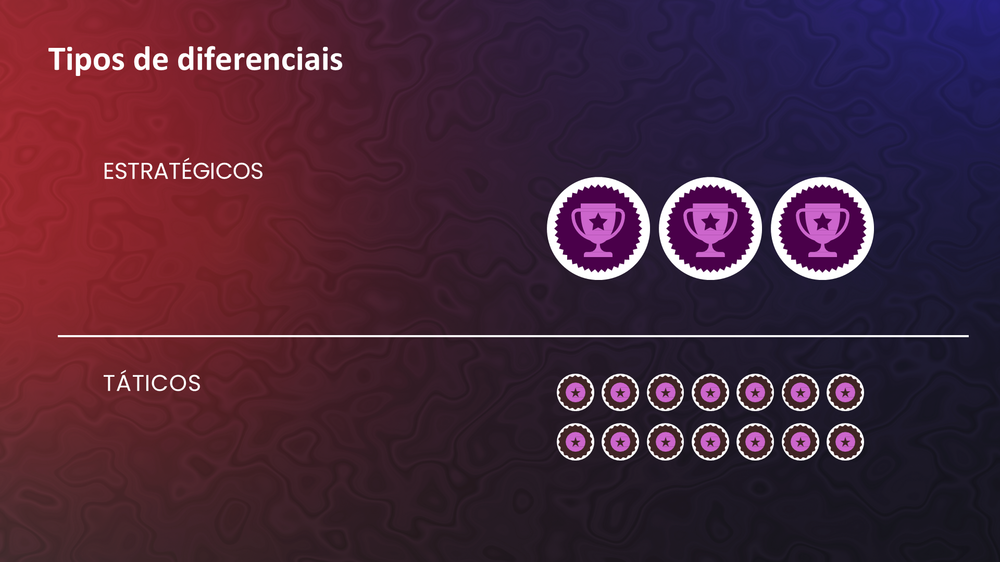
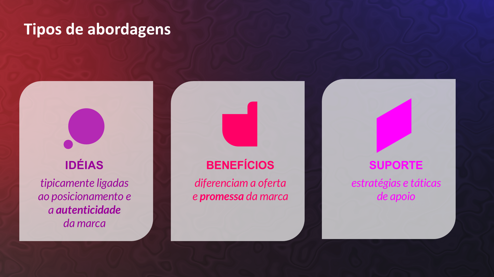
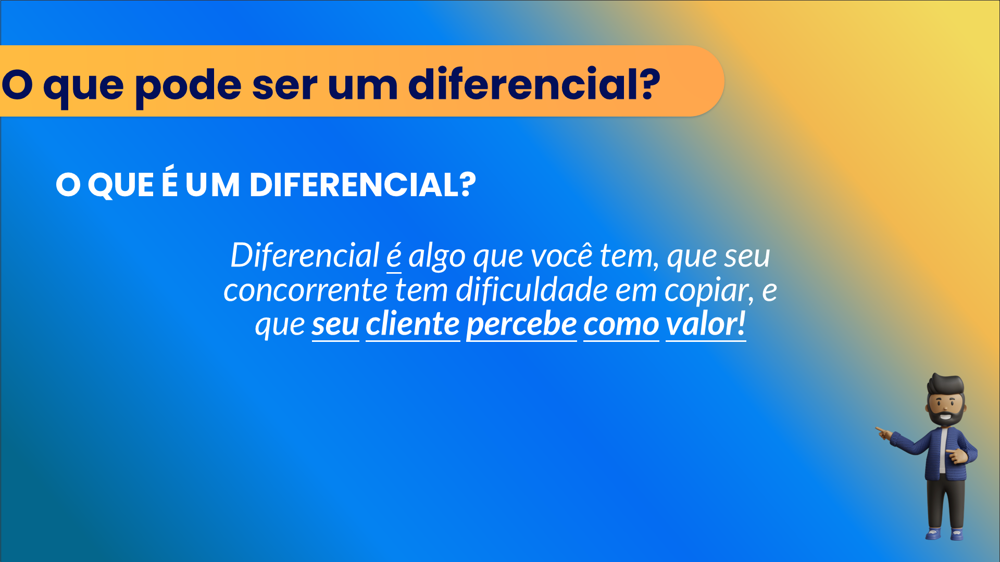

7 Suporte e Reforço à Diferenciação
As ideias diferenciadoras precisam de sustentação. Neste capítulo, exploraremos estratégias e táticas de suporte que transformam um diferencial declarado em um diferencial reconhecido e valorizado pelo mercado.
7.1 Por que o suporte é necessário

Ter um diferencial não é suficiente. É preciso demonstrá-lo, prová-lo e reforçá-lo consistentemente. O suporte é o conjunto de evidências, ações e estratégias que fazem o público acreditar e valorizar o diferencial da marca.
Sem suporte, o diferencial é apenas uma declaração. Com suporte, torna-se uma convicção.
Considere dois cenários. Sem suporte, a afirmação “Nosso café é o mais sustentável da região” faz o comprador pensar “Todos dizem isso”. Com suporte, a afirmação “Nosso café é cultivado em sistema agroflorestal com 47 espécies nativas, certificado Rainforest Alliance, com relatório anual de pegada de carbono publicado em nosso site” faz o comprador pensar “Isso é real e verificável”.
7.2 Estratégias de suporte para o agro

7.2.1 1. Criar ou pertencer a uma subcategoria
Enquadrar o produto em uma subcategoria nova ou diferente altera a percepção de valor. Em vez de competir dentro de uma categoria genérica, você cria (ou participa de) uma categoria menor onde pode ser referência.
Exemplos no agro:
| Categoria genérica | Subcategoria criada | Efeito |
|---|---|---|
| Café | Café de floresta (Forest Coffee) | Posiciona-se como pioneiro de uma nova categoria |
| Mel | Mel de abelhas nativas sem ferrão | Sai da competição com mel de Apis mellifera |
| Queijo | Queijo de leite cru maturado em caverna | Cria um nicho com barreiras naturais de entrada |
| Cachaça | Cachaça de terroir (single estate) | Importa o conceito de terroir do vinho |
7.2.2 2. Ingrediente ou componente especial
Destacar um componente do produto que lhe confere singularidade. No agro, isso pode ser uma variedade, um insumo ou um elemento natural.
Exemplos incluem o café da variedade Geisha (conhecida pela complexidade sensorial), o chocolate produzido com cacau crioulo raro, a cerveja com lúpulo cultivado na própria fazenda e o azeite de olivais centenários da Serra da Mantiqueira.
O “ingrediente especial” funciona melhor quando pode ser nomeado e comunicado com clareza, quando tem proteção natural contra cópia (variedade rara, localização exclusiva) e quando gera uma diferença perceptível no produto final.
7.2.3 3. Processo de produção destacado
No agro, o como é feito frequentemente é o diferencial mais autêntico. Documentar e comunicar o processo produtivo único.
Técnicas de destaque:
O detalhamento consiste em explicar cada etapa do processo (“Colheita manual, grão a grão, no ponto exato de maturação”). A transparência abre o processo ao público por meio de vídeos, visitas e QR codes na embalagem. A certificação valida formalmente o processo (orgânico, biodinâmico, comércio justo), enquanto a nomenclatura proprietária dá identidade ao método, por exemplo, “Método Nascentes de Fermentação Controlada”.
7.2.4 4. Produto ou serviço adicionado
Agregar algo extra que enriquece a oferta principal:
Produtifique o serviço. A consultoria agrícola que entrega um relatório impresso e encadernado tangibiliza o intangível, assim como o agrônomo que inclui um dashboard digital de acompanhamento da lavoura.
Servicifique o produto. O produtor de café que oferece consultoria de preparo para cafeterias, a fazenda de leite que ministra workshops de queijaria para clientes e o fruticultor que fornece receitas e harmonizações com cada entrega transformam a venda de produto em relacionamento contínuo.
Experiencifique ambos. O agroturismo permite que o comprador visite a fazenda, colha o próprio café e participe da torra; degustações guiadas na propriedade e eventos sazonais atrelados à safra (festa da colheita, dia do produtor) acrescentam camadas de memória e fidelização.
7.2.5 5. Personalização e customização
No agro de nicho, a capacidade de personalizar o produto é um diferencial poderoso. Torrefação de café sob medida para cada cafeteria (perfil de torra personalizado), cortes de carne customizados para o padrão de cada restaurante, embalagem personalizada para presenteavéis (cestas gourmet com rótulo do comprador) e blends exclusivos de mel ou azeite para determinado canal de venda são exemplos de como a personalização gera percepção de exclusividade.
7.2.6 6. Edição limitada e sazonalidade
A escassez percebida gera valor. Comunicar a limitação natural do produto como atributo de exclusividade transforma restrições em diferenciais. Enunciados como “Lote especial, apenas 120 sacas desta safra”, “Mel de florada de laranjeira, disponível somente em setembro”, “Edição de inverno, queijo maturado durante os meses frios da Serra” ou “Safra 2025, notas exclusivas de frutas vermelhas e chocolate amargo” ativam no comprador o senso de oportunidade única.
7.2.7 7. Pontos de prova
Evidências concretas que sustentam as declarações da marca incluem prêmios e concursos (Cup of Excellence, concurso de qualidade de queijo, prêmio de inovação agrícola), certificações (Orgânico, Rainforest Alliance, Fair Trade, GlobalGAP, IBD), Indicação Geográfica (de Procedência ou Denominação de Origem), depoimentos de clientes (relatos de compradores e chefs que usam o produto), cobertura de mídia (reportagens, artigos, menções espontâneas), dados e pesquisas (análises sensoriais, laudos de qualidade, dados de sustentabilidade) e parcerias e endossos (recomendação de sommeliers, chefs, instituições).
Para cada diferencial que você declara, tenha pelo menos três pontos de prova que o sustentam. Se não conseguir listar três provas, o diferencial ainda precisa ser fortalecido antes de ser comunicado.
7.3 A diferenciação em serviços agrícolas
Serviços no agro (consultoria agronômica, assistência técnica, gestão de propriedades, análises laboratoriais) enfrentam um desafio extra de diferenciação: são intangíveis. O comprador não pode “ver” ou “tocar” o serviço antes de comprá-lo.
Estratégias de diferenciação específicas para serviços começam por tangibilizar o intangível, criando entregáveis concretos como relatórios visuais, dashboards, certificados e materiais impressos. Em seguida, criar um método próprio dá força ao posicionamento (“Diagnóstico Pecuário 360°” é mais forte que “consultoria em pecuária”). Além disso, é fundamental documentar resultados com estudos de caso mostrando antes e depois, números concretos de ganho de produtividade, e padronizar a experiência, garantindo que o cliente tenha uma interação consistente e previsível a cada contato.
7.4 Combinando suportes

As táticas de suporte devem ser combinadas de forma coerente com a ideia diferenciadora escolhida. Exemplo:
| Ideia diferenciadora | Suportes combinados |
|---|---|
| Especialização em café de altitude | Subcategoria (“Mountain Craft Coffee”) + Ingrediente (variedade Catuaí Vermelho) + Lotes limitados por altitude + Prêmios em concursos de qualidade |
| Propósito de regeneração ambiental | Certificações ambientais + Dados de biodiversidade + Parcerias com ONGs + Documentário da fazenda |
| Tradição familiar centenária | História documentada + Fotos de época + Método de produção ancestral + Depoimentos da comunidade |
7.5 Exercício prático, Montando seu suporte
7.5.0.1 🌿 Ferramenta: Matriz de Suporte à Diferenciação
Para as 2-3 ideias diferenciadoras que você selecionou no capítulo anterior, preencha:
Ideia diferenciadora 1: ___________________
- Pontos de prova existentes: ___________________
- Pontos de prova que preciso criar: ___________________
- Suportes táticos que posso implementar: ___________________
- Prazo para implementação: ___________________
Ideia diferenciadora 2: ___________________
- Pontos de prova existentes: ___________________
- Pontos de prova que preciso criar: ___________________
- Suportes táticos que posso implementar: ___________________
- Prazo para implementação: ___________________
Verificação final: